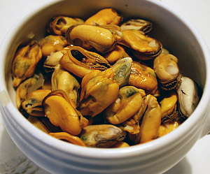

Miesmuschelsuppe
6 von 63Kg Muscheln gründlich waschen und Bart entfernen.
Dann mit 2 dl Weisswein, Schalotten, 2 Knoblauchzehen und Petersilie in einen grossen Topf geben. Bei starker Hitze 10 Minuten dämpfen, bis sich die Muscheln geöffnet haben.
Das Muschelfleisch aus der Schale lösen und warm stellen.
Den Muschelsud durch ein Tuch passieren.
In Olivenöl 2 in feine Scheiben geschnittene Fenchel andünsten.
Inzwischen in einem anderen Topf 50 g Butter zerlassen und 40 g Mehl einrühren.
8 dl Fischbrühe dazugeben und etwa 30 Minuten köcheln lassen.
Nun den Muschelsud, einen Schuss Pernot und etwas Safran beigeben. Mit Salz und Pfeffer abschmecken. Das Fenchelgemüse dazugeben.
2 dl Sahne und 2 Eigelbe vermengen, unter die Suppe ziehen. Die Suppe darf nicht mehr kochen. Sobald sie etwas gebunden ist, das Muschelfleisch hineingeben.
